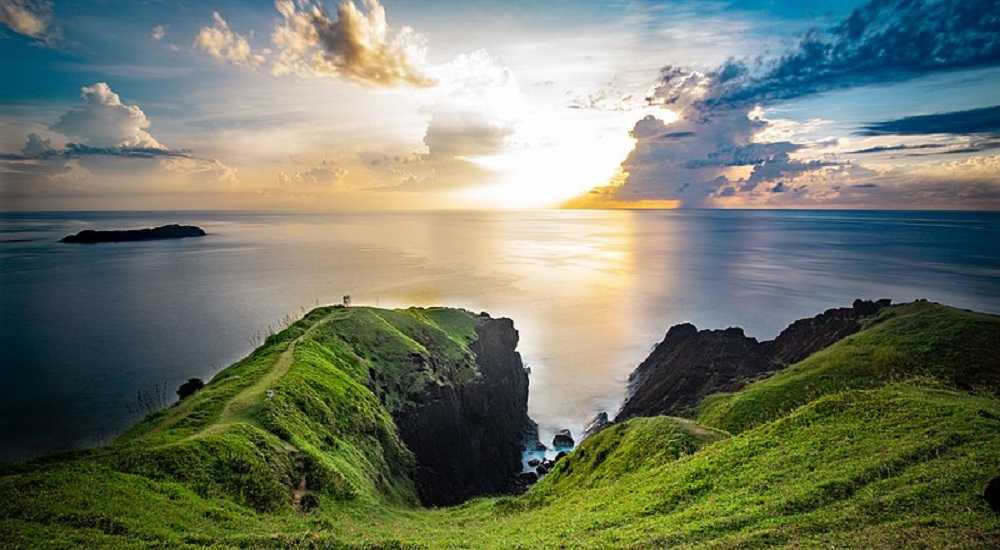
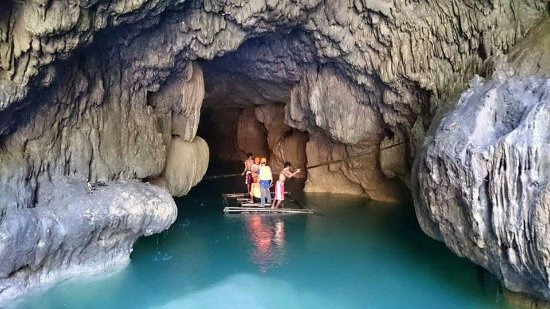

A perfect cone-shaped volcano tourist spot in Bicol Albay
Calaguas Island
A beautiful place in Bicol famous for its pristine beach
Caramoan Island
Jaw-dropping Camarines Sur tourist spot
Cagsawa Ruins
The place with a tragic history
Daraga Church
A historic Albay tourist spot
Donsol
A tourist spot in Sorsogon where you can swim with whale sharks
Ligñon Hill Nature Park
A tourist spot in Legazpi Albay offering a great adventure
Subic Beach (Sorsogon)
A tourist attraction in Sorsogon famous for its pinkish sand
Peñafrancia Basilica Minore
One of the famous Naga City tourist spots
Talisoy Beach
A tourist spot in Bicol Albay with azure waters and white sands

Binurong Point
A Batanes-like place in Bicol
Marilima Beach
Another beautiful beach Bicol tourist destination
Maribina Falls
The most famous and accessible waterfall in Catanduanes
Halea National Park
Rich in marine life

Quitinday Underground River
An offbeat destination
Brief History
Albay and its surrounding areas were known as Ibalon when Juan de Salcedo and 120 soldiers xplored it in 1573. Sawangan, a small settlement by a mangrove swamp, became a town called Albay bay (which means “by the bay”) in 1616. The town was first renamed Albay, then Legazpi, as Albay went on to refer to the province.
In 1846, the islands of Masbate, Ticao, and Burias were separated from Albay to form the comandancia of Masbate. Albay was then divided into four districts: Iraya, Cordillera or Tobacco, Sorsogon, and Catanduanes. 1n 1894, Sorsogon became a separate province and Catanduanes in 1945. The province of Albay itself was created on March 10, 1917.
In 1649, the natives rebelled against their recruitment to Cavite to build galleons. In 1814, Mayon Volcano erupted, killing 1,200 people and burying the town of Cagsawa. During the early 19th century, abaca hemp for shipping rope became source of wealth.
In 1942, the Japanese Imperial Forces invaded and entered Albay.
In 1945, Filipino and American troops with Bicolano guerillas fought against the Japanese and liberated Albay during World War II.
Located between the provinces of Camarines Sur on the north and Sorsogon on the south. It is bounded on the east by the Pacific Ocean, on the northeast by the Lagonoy gulf, and on the west and southwest by the Burias Pass. The islands in the north under the jurisdiction of the province are Rapu-Rapu, Batan, Cagraray and San Miguel.
With the country’s many wonders of nature, it’s not surprising to see another jaw-dropping tourist spot in Bicol Albay. Mayon Volcano is one of the most beautiful wonders of nature in the country. It is both a stunner and a killer—renowned for its beauty as it is feared for its destructiveness. Its symmetry and perfect cone shape draws attention across the world but what lies beyond its beauty is its deadly nature: an enormous chamber, churning with molten rock and toxic gas that could blow anytime.
It has erupted over 51 times in the past four centuries, the most destructive of which is in 1814. Nevertheless, it has developed a culture of resiliency among the inhabitants of its vicinity, who always rebuilt their towns and cultivated their fields after each destructive eruption.
Calaguas Island
Photo Source: https://www.zenrooms.com/blog/post/
If we’re talking about the most pristine beaches in the Philippines, Calaguas Island is surely in the list. Over the years, this tourist attraction in Camarines Norte has become a popular beach destination and a go-to place for those who want to get away from the hustle and bustle of the city. Its powdery bone-white sand and cerulean waters can still elicit the perfect island vibe.
Caramoan Island
Photo Source: https://www.zenrooms.com/blog/post/
Towering cliffs, white sand beach and clear blue waters—these make up Caramoan islands that’s why it’s usually likened to El Nido in Palawan. This postcard-like Camarines Sur tourist spot is perfect for island-hopping, swimming, and picture-taking of course! And just a fun information, Caramoan Island was the setting of the reality show Survivor Philippines.
Cagsawa Ruins
Photo Source: https://www.zenrooms.com/blog/post/
Cagsawa Ruins is a result of the most violent eruption of Mayon Volcano in recorded history. Thousands of people were killed in the disaster, including those who sought refuge in this stone church during the eruption that were engulfed by the fast-flowing volcanic matter. This belfry is all that remains of the town during that 1814 eruption.
Now, it is a popular tourist attraction in Bicol that never fails to amaze its visitors. This Albay tourist spot is a must-visit whether you’re a first time or returning traveler.
Daraga Church
Photo Source: https://www.zenrooms.com/blog/post/
Among the most notable and must-visit churches in the Philippines is Daraga Church. Also known as Church of Nuestra Señora de la Porteria, this Albay tourist spot has witnessed numerous historic events like the 1814 Mayon eruption and World War II. Add this 18th-century baroque church in your itinerary for a memorable trip.
Donsol
Photo Source: https://www.zenrooms.com/blog/post/
While Visayas has Oslob as a famous whale shark spot, Luzon has its fair share of a beautiful destination where you can also swim with the whale sharks. Donsol, Sorsogon is a popular Bicol tourist destination because of its amazing waters and life-changing experiences with the whale sharks. Make sure to visit this tourist spot in Sorsogon for a fun adventure.
Ligñon Hill Nature Park
Photo Source: https://www.zenrooms.com/blog/post/
If you’re looking for a fun and thrilling adventure in Bicol, the best place to be is Ligñon Hill Nature Park. This tourist spot in Legazpi is popular for families and groups traveling together. This adventure park is located on top of a steep hill so getting there is quite a challenge already. And when you get there, you’ll be rewarded with fresh air and a 360-degree view of the fields below. You can also try their famous 320-meter long zip line, and a hanging bridge.
Subic Beach (Sorsogon)
Photo Source: https://www.zenrooms.com/blog/post/
Another tourist spot in Sorsogon that will make your heart skip a beat is the Subic Beach. Its beautiful pinkish sand and oh-so-fresh waters will leave you in awe. The best part is that the untouched coral formations in Subic Beach are perfectly visible.
Peñafrancia Basilica Minore
Photo Source: https://www.zenrooms.com/blog/post/
Peñafrancia Basilica Minore is one of the largest Marian Pilgrimage Sites in Asia. This Naga City tourist spot houses an image of the virgin Mary that was sculpted in 1710.
Talisoy Beach
Photo Source: https://www.zenrooms.com/blog/post/
Talisoy Beach is one of the most popular Catanduanes tourist spots and among the beautiful places in Bicol because of its shoreline that’s covered with fine white sand and its azure waters perfect for swimming. To locals, it is also known as Jesus’ Face Beach because of the unique rock formation that is said to look like the face of Jesus Christ.
Binurong Point
Photo Source: https://www.zenrooms.com/blog/post/
Another no-fail tourist attraction in Bicol is Binurong Point located in the town of Baras. Once you’re up there, it’ll remind you of one place—Batanes. Because of the rolling hills, grassy highlands in the area, and the waves crashing so hard on the rock surface, this Baras Catanduanes tourist spot lets you experience Batanes without having to fly up north.
To reach it, you’ll have to hike and pass some forest trails but don’t worry, it’s an easy one.
Marilima Beach
Photo Source: https://www.zenrooms.com/blog/post/
If you want to enjoy an island with a lesser crowd, consider visiting Marilima Beach. This unspoiled place in Bicol lets you reconnect with nature and have a quiet sunbathing time. What makes Marilima Beach a hit is that it faces the mainland Bicol where you could take a full view of Mayon Volcano and Bulusan Volcano, from a distance.
Maribina Falls
Photo Source: https://www.catanduanes.gov.ph
Maribina Falls is the most famous and accessible waterfall in Catanduanes. The cascading three-layer falls are located in the middle of the rustic surroundings and lush green vegetation. Maribina Falls is about 5-6 meters high with radiant spouting rapids of perfectly clear waters. Don’t miss this tourist spot as it’s one of the most stunning places in Bicol.
Situated at the extreme northern end of Ticao Island, you will find an ocean paradise that will take your breath away. Its rich marine life that could easily be seen beneath the crystal clear waters is what draws travelers to visit Halea National Park.
It’s not just in Palawan you’ll see an underground river in the Philippines because in Bicol, another one exists, too. Quitinday Underground River is an offbeat but majestic Albay tourist spot. The 150-meter-long cave was formed by water erosion. You’ll be amazed at the rock formations, stalactites, and columns inside. There’s also a cliff there perfect for diving.